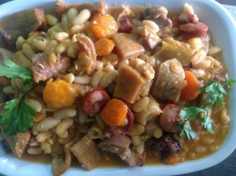

Feijoada to Portuguese

Description
Dish that served as a use of all pork meat, along with beans. It arises from the people's need and difficulties in
eating, as it was easy to prepare and all the meat from pigs raised at home was used.
Ingredients
- 700 g pork ribs
- 4 pork ribs
- 1/2 pork chisel
- 1 pig's ear
- 1 meat sausage
- 1 farinheira
- 750 g dry catarino beans
- 1 large onion
- 2 teeth garlic
- 1 carrot
- 1 sheet blonde
- 1 c. savory soup
- qb oil
- August salt and pepper
- August tabasco
- 1/4 of cabbage + 1/4 of heart cabbage
- 1 sprig of parsley
Steps
- The night before the day you are going to cook/eat the feijoada, prepare the meat and soak the beans.
- We season all the meats (except the chorizo and farinheira) with coarse salt and reserve.
- In a large bowl, place the dry beans and cover with water, leaving to soak overnight.
- The next day, we start by cooking the beans, draining the water in which they were soaked, placing the beans in a
pressure cooker, covering with water, covering and heat until they boil (reach pressure).
- At this point we count 20 minutes and then take it off the heat.
- We remove the pressure from the pan and season the beans with the savory and salt to taste, put the beans back on
the
heat just until they boil and then reserve the beans.
- In a small pan, cook the flour in water (make some holes in it to prevent it from exploding). Reserve.
- In the same pan, without washing, add the onion, chopped garlic and carrot and the bay leaf, drizzle with a
drizzle of
olive oil and sauté until the onion becomes translucent.
- At this point, add the meat cut into small pieces, the sliced chorizo, the coarsely sliced cabbage, salt and
pepper
to taste and the Tabasco.
- Allow the meat to brown a little before covering with 1 glass of water and covering the pressure cooker. Heat
until it
boils (reaches pressure).
- At this point we count 20 minutes and then uncover, removing the pressure and letting the sauce cook a little
before
adding the previously cooked beans (and broth) and the sliced farinheira.
- Let it boil for about 5 minutes and adjust the seasoning if necessary and add the chopped parsley.
- Serve with white rice and, if you like, farofa (a Brazilian touch but which goes very well with this dish).